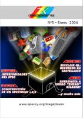
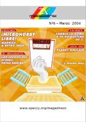
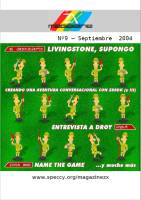

Número 10 - 2004 noviembre
Descarga (PDF 2.5 MB español)

Número 5 - 2004 enero
Descarga (PDF 1.2 MB español)

Número 6 - 2004 marzo
Descarga (PDF 2.0 MB español)
Número 7 - 2004 mayo
Descarga (PDF 1.7 MB español)
Número 8 - 2004 julio
Descarga (PDF 1.4 MB español)

Número 9 - 2004 septiembre
Descarga (PDF 1.1 MB español)